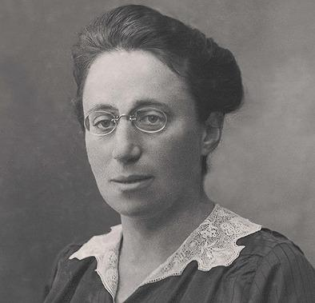

Emmy Noether
Área: Matemática e Física Teórica
Nascimento: 23 de março de 1882, Alemanha.
Falecimento: 14 de abril de 1935, Estados Unidos.
Quem foi
Emmy Noether foi uma matemática alemã considerada uma das figuras mais influentes da álgebra moderna. Suas pesquisas transformaram a matemática abstrata e estabeleceram uma relação fundamental entre simetrias e leis de conservação na física.
Filha do matemático Max Noether, inicialmente pretendia ensinar inglês e francês, mas decidiu dedicar sua vida à Matemática. Enfrentou restrições ao acesso feminino às universidades alemãs e iniciou seus estudos como ouvinte.
Trajetória profissional
Em 1907, concluiu seu doutorado na Universidade de Erlangen. Durante vários anos trabalhou sem remuneração ou reconhecimento acadêmico formal, apesar de suas contribuições.
Posteriormente, foi convidada a trabalhar na Universidade de Göttingen, onde enfrentou resistência à presença de mulheres no ensino superior. Em seus primeiros anos, suas aulas precisavam ser anunciadas sob o nome de outros professores.
Em 1933, com a ascensão do nazismo, perdeu seu cargo na Alemanha e se mudou para os Estados Unidos, onde lecionou no Bryn Mawr College até 1935.
Principais contribuições
Teorema de Noether: demonstrou uma relação profunda entre simetrias contínuas e leis de conservação, como a conservação da energia e do momento, tornando-se fundamental para a física teórica moderna.
Álgebra abstrata: revolucionou o estudo de anéis, ideais e estruturas algébricas, contribuindo para uma abordagem mais geral e estrutural da matemática.
Topologia algébrica: suas ideias sobre estruturas e relações algébricas exerceram influência importante no desenvolvimento da área.
Importância histórica
Emmy Noether transformou profundamente a Matemática e a Física do século XX. Seu trabalho é essencial para compreender diversas teorias modernas, incluindo a relatividade e a mecânica quântica.
Além de sua contribuição científica, representa a resistência de mulheres que enfrentaram discriminação de gênero e antissemitismo no meio acadêmico.
Referências bibliográficas
Max-Planck-Gesellschaft — Emmy Noether. Consultar fonte
NOETHER, E. Invariante Variationsprobleme. 1918.
DICK, A. Emmy Noether 1882–1935. Birkhäuser, 1970.